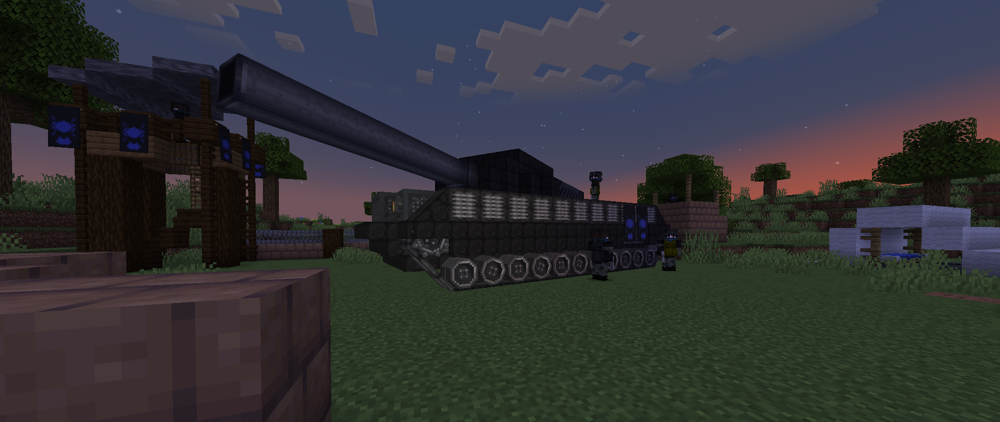

Combined Arms is a modpack/setting/server for minecraft focused around the emergence of the atomic age.
While the factions and events in the story are based on real-life equivalents, they aren't intended to be historically accurate.
The main stage is the Pacific island chain of Berilia, a formerly neglected corner of the world that had been found to hold high quantities of uranium ore.
A Great War had been raging for several decades between the world's great powers, with seemingly no end in sight; A few months before present day
the first prototype nuclear bomb was detonated near the front lines, bringing a moment of pause and a partial ceasefire across the board.
Before long the great powers realised the source of the explosion, and immediately began scrambling to assemble a nuclear arsenal for themselves.
Countless began flooding to Berilia and other similar territories to harvest and export the uranium buried there.
Content
The modpack is mainly based around the Create mod, with weapons and ammunition being produced via Create mechanisms, though there are alternative means to aquiring most items.
Both Wandering Traders and Pillagers have been overhauled, with Wandering Traders offering supplies and loot cases in exchange for uranium crates,
and Pillagers becoming bandits or rival prospectors, with modern fortresses that can be raided for munitions.
The mods Just Enough Guns, Create Big Cannons, Trackwork, Eureka, CBC: Nuclear, and Immersive Aircraft are some of the main content mods that allow players to create firearms,
artillery, tanks, battleships, biplanes, and nuclear weapons.

There are also mods for more strategic purposes, such as adding radio systems, film cameras, simple computers, oil distillation and electrical systems.
The Continents and Geophilic mods modify world generation, favouring large oceans and continents, making sailing more viable and increasing pressure to stay near the spawn continent.
Information on Traders and Pillagers
Setting
Characters may have their own reasons for sailing to Berilia, be it allegiance, seeking fortune, influence, freedom, or simply violence. Below are some notable great powers and their relationship with Berilia.
The NSCU:
A trade and defence union surrounding the North Sea, seeking uranium from Berilia to establish a nuclear deterrent from invasion.
Type: Union
Leader: NSCU Parliament (Democracy)
The Riesen Empire:
A threatening yet exhausted empire; Any prospect of surrender would result in crippling retributions to be paid; Nuclear weapons would act as a powerful bargaining chip to end the war.
Type: Empire
Leader: Kaiser Wolf (Autocracy)
The Eastern Union:
Countless smaller nations swore loyalty to the Emperor in exchange for protection from the war; Securing a nuclear arsenal is seen as almost mandatory to retain his influence.
Type: Union
Leader: Emperor Nikolai (Autocracy)
The Denshima Empire:
An island nation that seized control of the west Pacific with the aid of precision ballistics computers, seeking to claim the power of fission for the Empress alone.
Type: Empire
Leader: Empress Saiko (Monarchy)
The UVR:
A union of republics across the new world testing their might to protect their interests throughout the war, seeking uranium for economic and military gain.
Type: Union
Leader: President Harlow (Democracy)
The Corsair Reach:
A loosely organised gang of pirates, smugglers, mercenaries and gunrunners supplying the empires' forgotten colonies. While having no use for uranium, Berilia is an excellent customer for munitions.
Type: Unorganised
Leader: None
The different backgrounds and goals of characters should hopefully provide plenty of opportunity for interesting interactions.